STORYBOARD ／ PROMOTION MUSIC VIDEO
会社の曲に合わせた宣伝ミュージックビデオの完成イメージです。12 のパートそれぞれについて、冒頭と見せ場の 2 コマを、実際の映像と同じ方法でコードから描画しました。
火花は使いません。切削は、工具の軌跡の細い光の線と、削った面を走る金属の光沢で表現しています。
写真の枠について：斜線の枠は、ホームページの写真が入る位置です。サイトにまだ接続できないため、枠の中に入れる写真の名前を書いています。
時刻について：各パートの時刻は、曲の自動解析による推定です。実際に聴いて確定させてください。
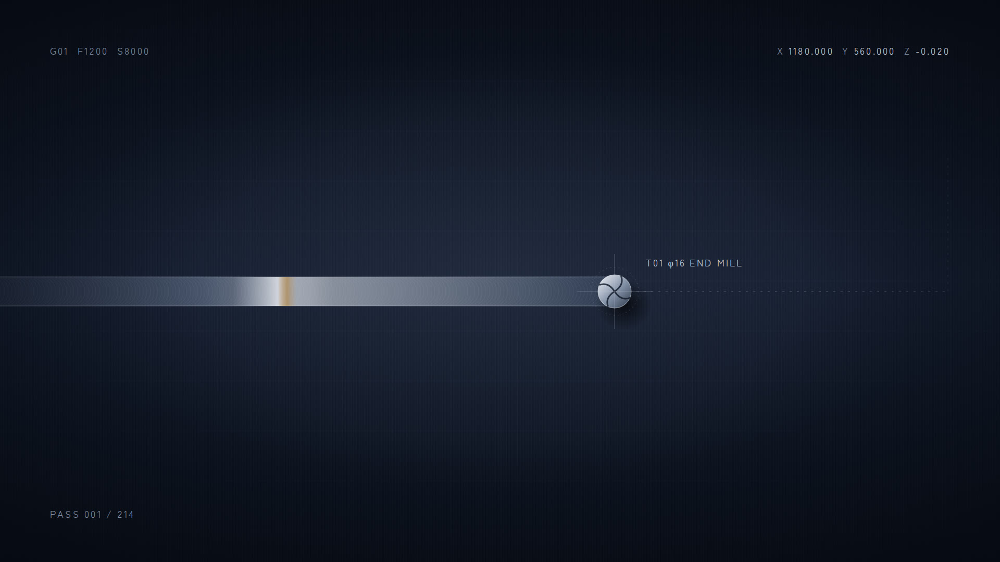
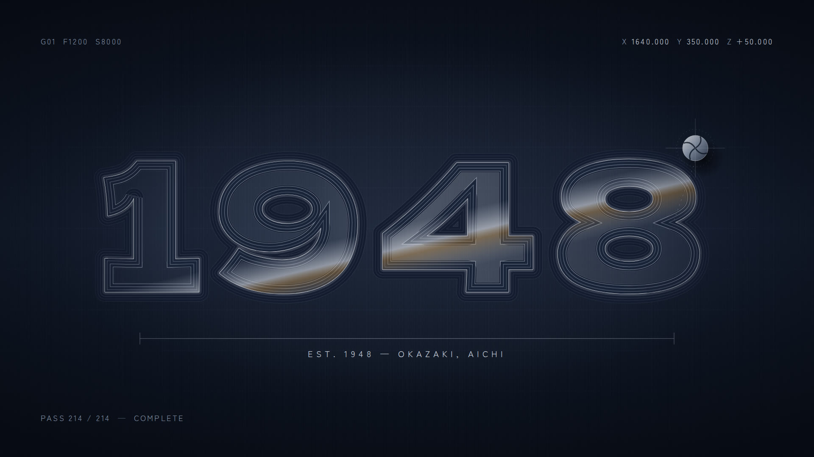
暗闇に鉄のブロック。エンドミルが静かに表面をなぞり、削られた面に金属の光沢が走る。工具の軌跡が光の線になって「1948」を描く。
拍ごとに軌跡の線が1本ずつ増える。最後の拍で「1948」が完成
（歌なし・演奏のみ）
（素材不要・CGで制作）
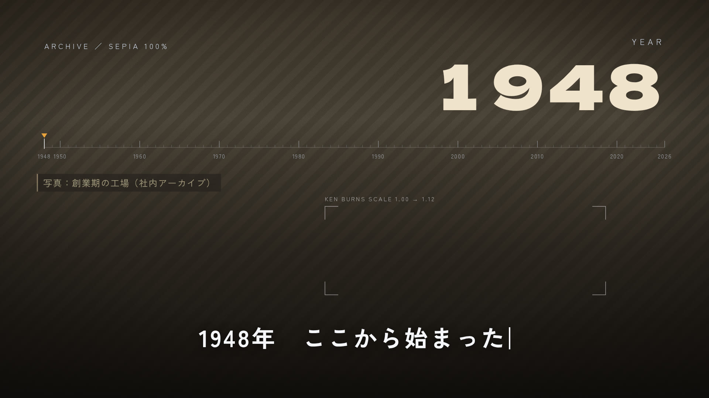
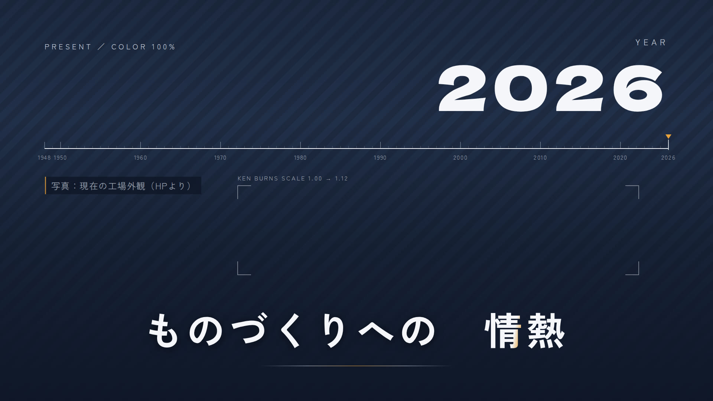
年号が 1948 → 現在 へカウントアップ。創業期〜現在の工場写真をゆっくりズーム。セピアから徐々にカラーへ。歌詞はタイピングで1行ずつ。
1小節ごとに写真を切り替え。「情熱」で色が完全にカラーに
1948年 ここから始まった
受け継いだ技術 積み重ねた想い
時代が変わっても
変わらないものがある
ものづくりへの 情熱
会社沿革の写真、工場外観、創業期の写真（あれば）
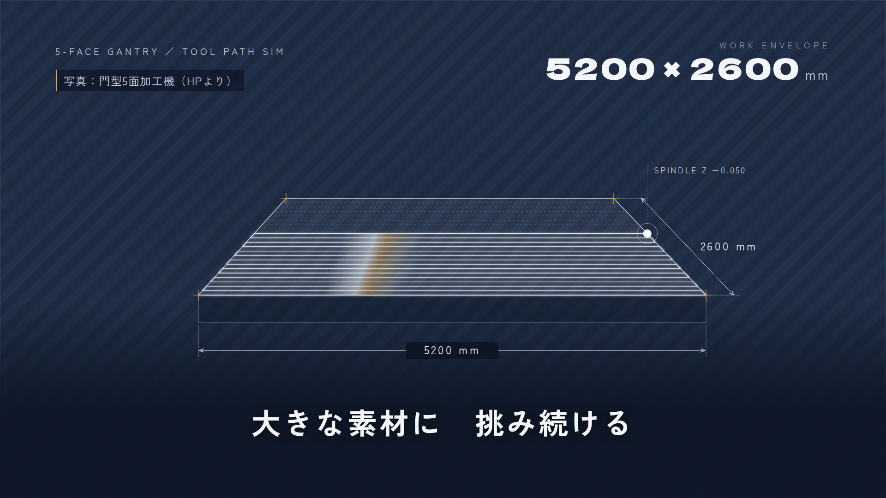
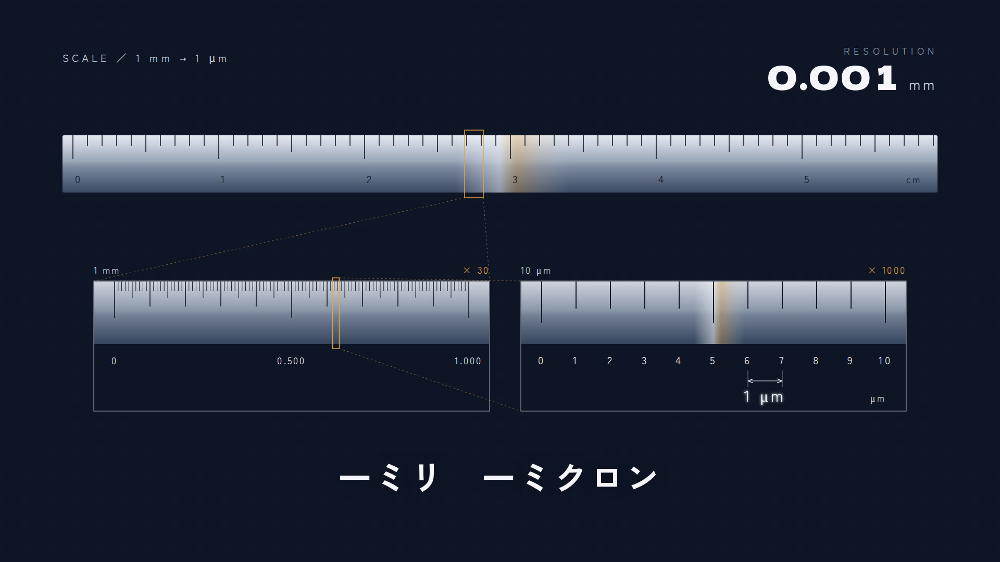
門型5面加工機と大物ワーク。工具の軌跡（ツールパス）が線で描かれる。「一ミリ 一ミクロン」で目盛りが 1mm→1μm まで拡大。最大ワーク 5200×2600mm をカウンター表示。
「一ミリ」「一ミクロン」の2拍でズームが2段階で入る
鉄を削り 形を生み出す
大きな素材に 挑み続ける
一ミリ 一ミクロン
その先にある精度を追い
見えないところまで
妥協せず 向き合う
技術は 人から人へ
想いは 未来へ
門型5面加工機の写真、大物加工中の写真、加工部品の写真
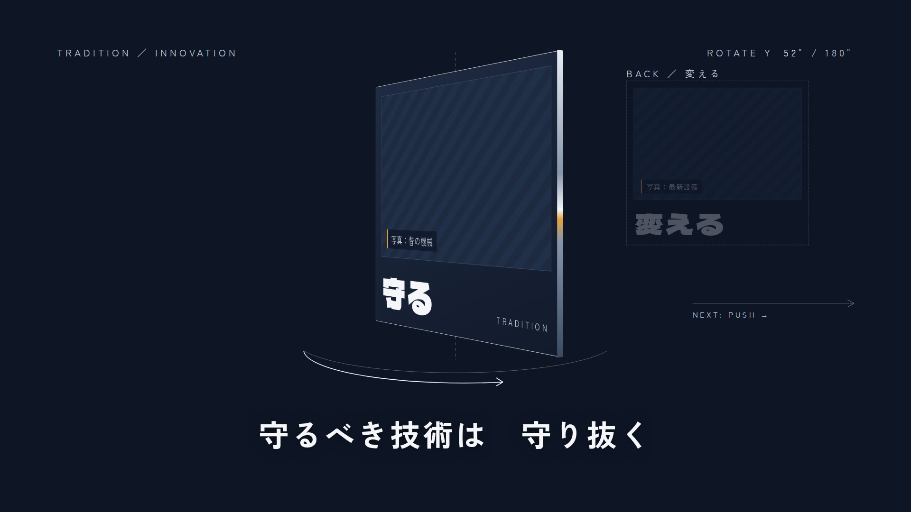
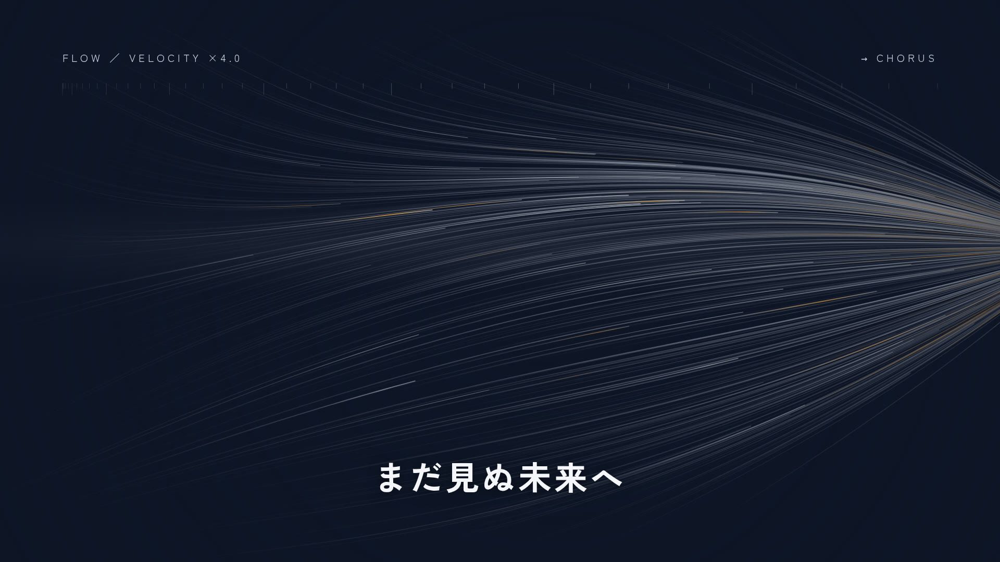
「守る／変える」を表と裏の3Dカードで対比（表：受け継ぐ技術、裏：新しい設備）。「昨日を超えて」「今日を超えて」で画面が右へ押し出され、光の流れが加速していく。
サビ前の4小節で流れの速度と明るさを上げていく
守るべき技術は 守り抜く
変えるべきものは 変えていく
昨日を超えて
今日を超えて
まだ見ぬ未来へ
昔の機械と最新設備の写真（対比用）
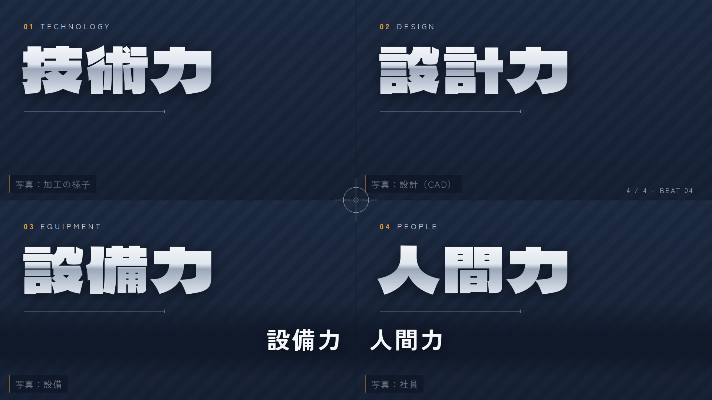
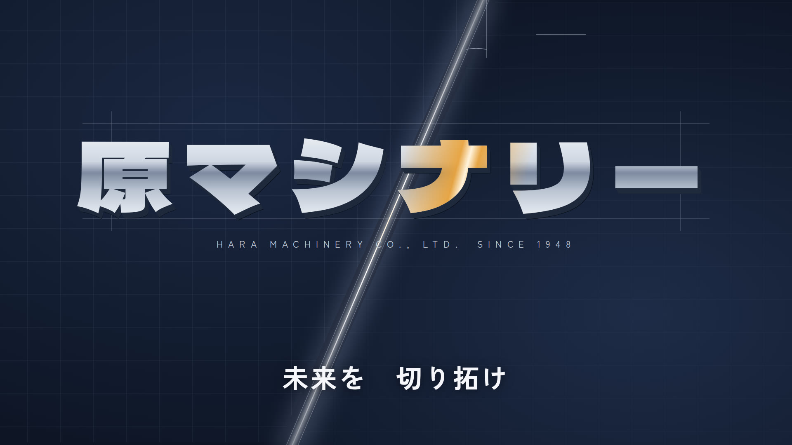
「技術力・設計力・設備力・人間力」を1拍1語で画面いっぱいに。4分割画面にそれぞれの写真。「切り拓け」で画面が切削されたように割れ、ロゴが線で描かれて3D化。
4つの力＝4拍。「原マシナリー」でロゴ確定＋光沢がロゴを横切る
技術力 設計力
設備力 人間力
すべての力を ひとつにして
まだない価値を 創り出せ
この手で
この技術で
未来を 切り拓け
原マシナリー
ロゴ（SVG推奨）、設計・設備・人の写真
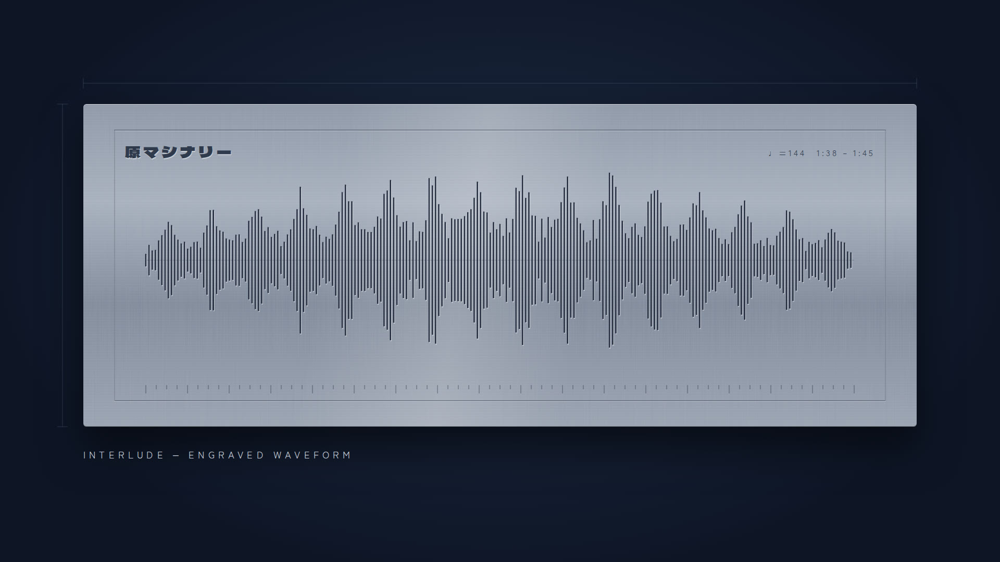
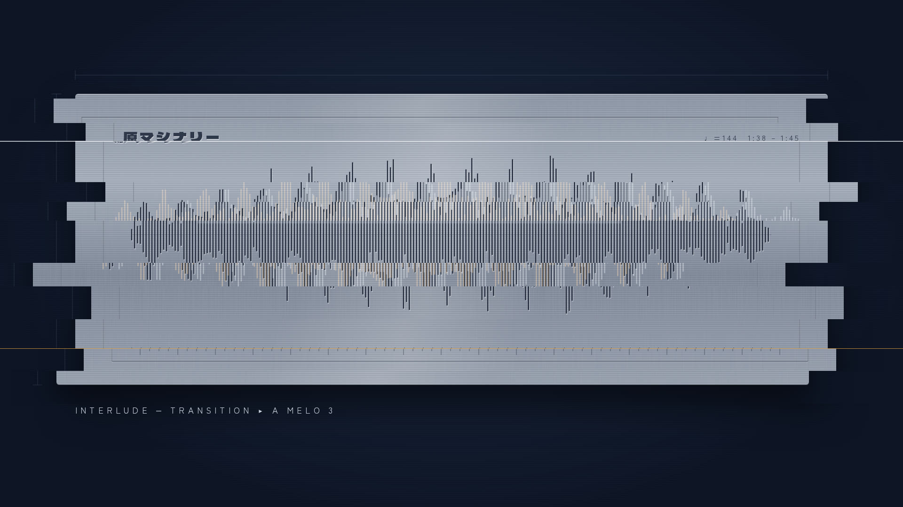
音の波形が鉄板に刻まれるライン表現。グリッチで次のパートへ転換。
波形は音量に連動。最後の1拍でグリッチ
（歌なし・演奏のみ）
（素材不要）
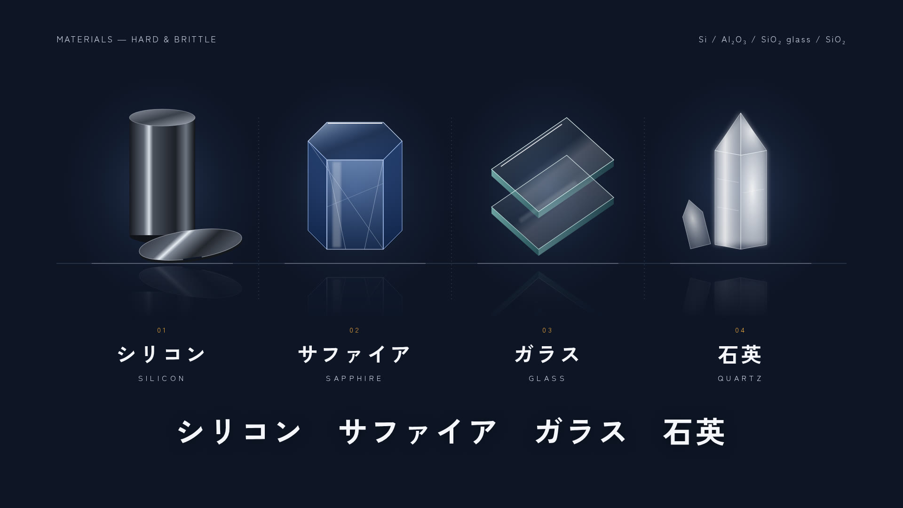
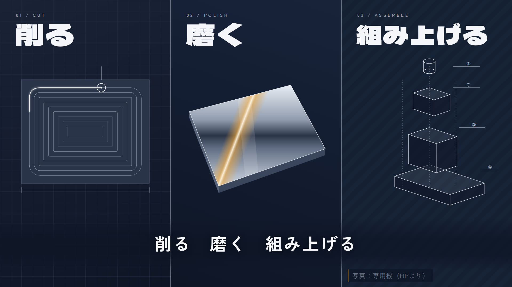
シリコン・サファイア・ガラス・石英を、それぞれの結晶や透明感をシェーダーで表現し、名前を拍で表示。「削る 磨く 組み上げる」は3拍で3カット。専用加工機の写真。
素材名4つ＝4拍で切り替え
難しい素材も 不可能じゃない
シリコン サファイア ガラス 石英
削る 磨く 組み上げる
一つひとつに 技術が宿る
設計から 加工まで
一貫して 応えていく
求められるものの
その先へ
専用機（シリコンインゴット・サファイア等の加工機）の写真、加工サンプル
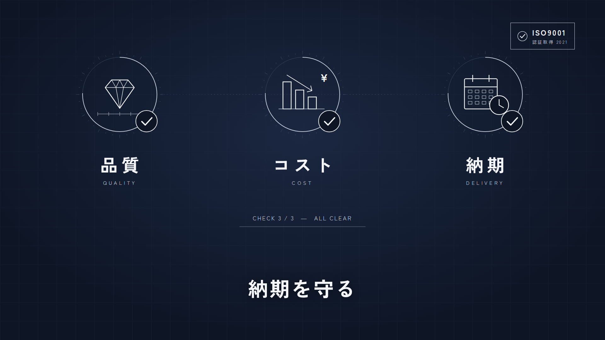
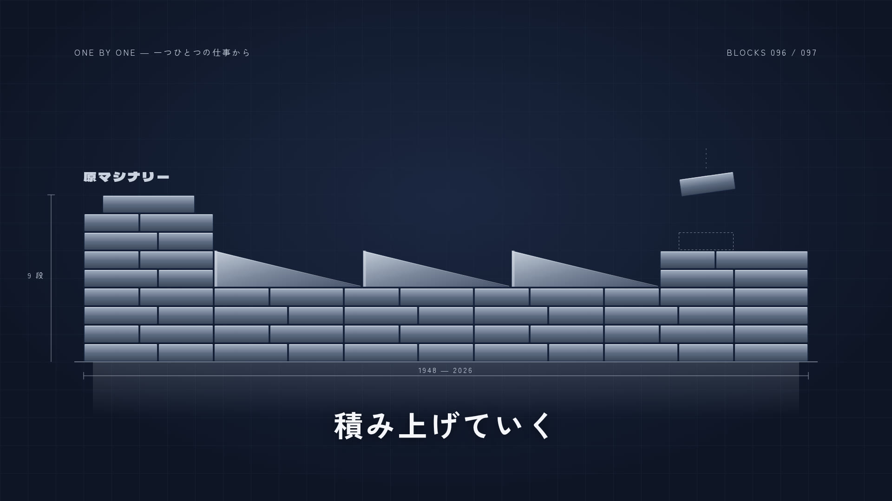
品質・コスト・納期の3つをチェックマークのアイコンで提示。「積み上げていく」でブロックが物理演算で積み上がり、会社のシルエットになる。
「品質を追い／コストに挑み／納期を守る」の各頭でチェック
品質を追い
コストに挑み
納期を守る
信頼は
一つひとつの仕事から
積み上げていく
ISO9001 認証の情報、検査風景の写真
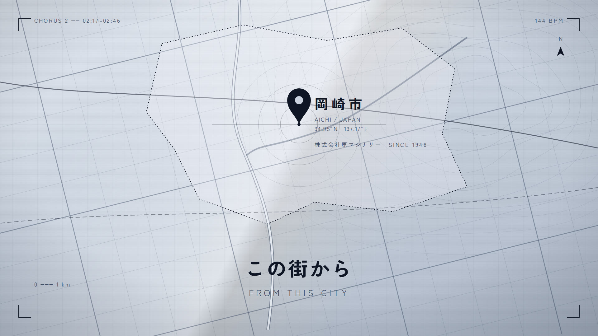
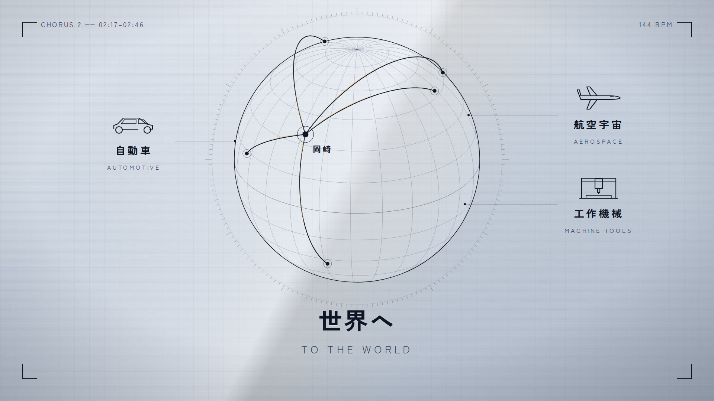
4つの力（サビ1と色違い）。「この街から 世界へ」で岡崎の地図から地球までズームアウト。自動車・航空宇宙・工作機械の業界アイコン。
「世界へ」の拍で一気にズームアウト
技術力 設計力
設備力 人間力
受け継いだ力を 進化させ
次の時代を 創り出せ
この街から
世界へ
未来を 動かせ
原マシナリー
本社所在地（岡崎市）、取引業界
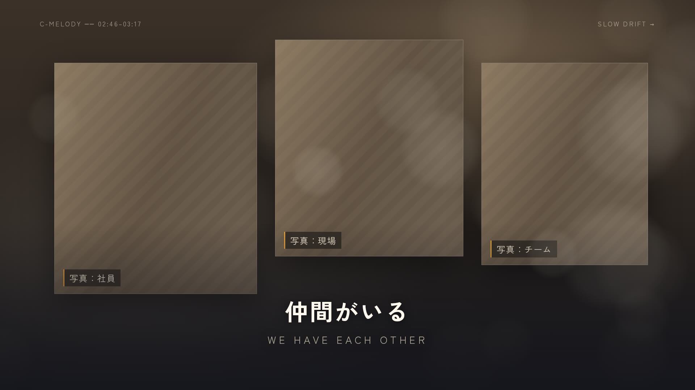
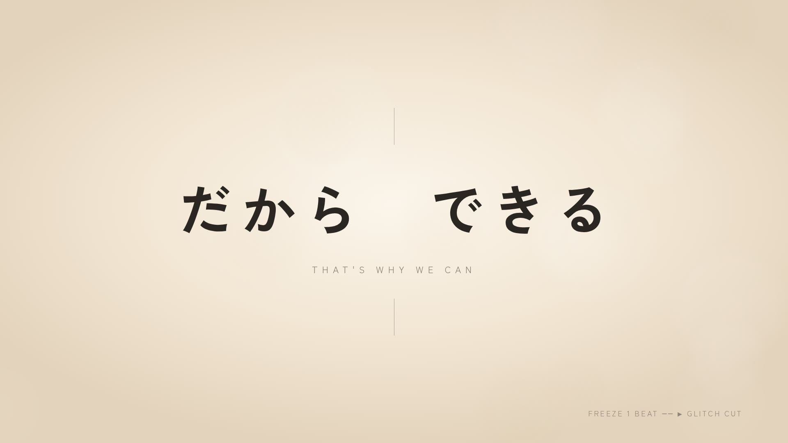
テンポを落とした温かい色調。「人がいる／技術がある／仲間がいる」で社員の写真をゆっくりスライド。光の粒が漂う。「だから できる」で一瞬の静止のあと、グリッチで最後のサビへ。
「だから できる」の直後に 1拍の静止（ブレイク）
変化を恐れない
挑戦を止めない
人がいる
技術がある
仲間がいる
だから できる
一つの会社から
一つの技術から
世界の未来へ
社員・現場の写真、代表メッセージの写真
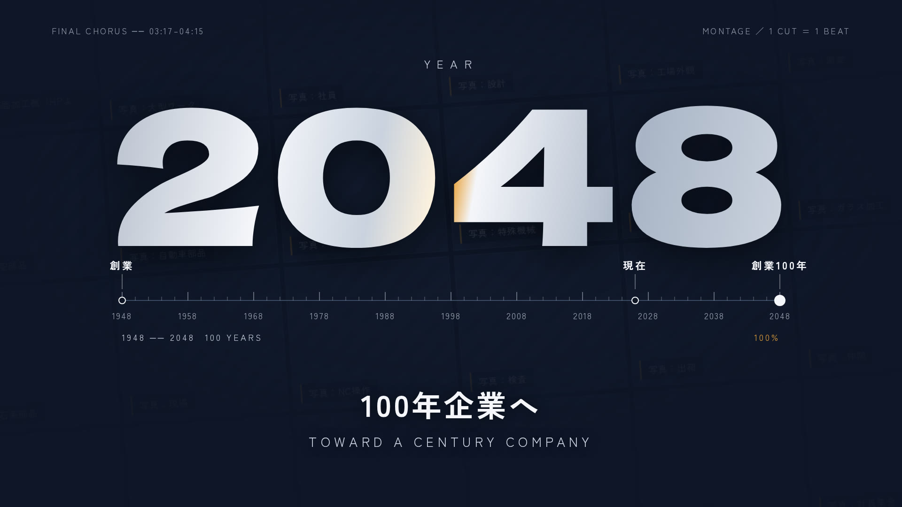
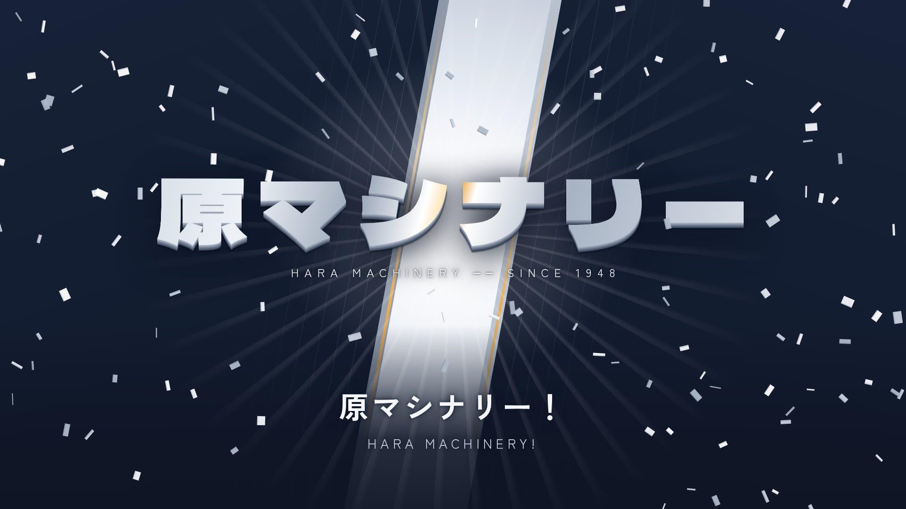
最大の盛り上がり。年号カウンターが 1948 → 2048（100年企業）。全写真を拍ごとに高速モンタージュ。3D ロゴが回転し、「切り拓け」で画面全体が切削されて光が差し込む。紙吹雪と、ロゴを走る金属の光沢。
1拍1カット。「100年企業へ」でカウンターが 2048 に到達
技術力 設計力
設備力 人間力
四つの力を ひとつにして
新しい時代を 切り拓け
1948年から
受け継いだ ものづくり
100年企業へ
その先へ
まだ見ぬ未来を
この手で創る
技術で
未来を
切り拓け
原マシナリー！
これまでの全写真、ロゴ
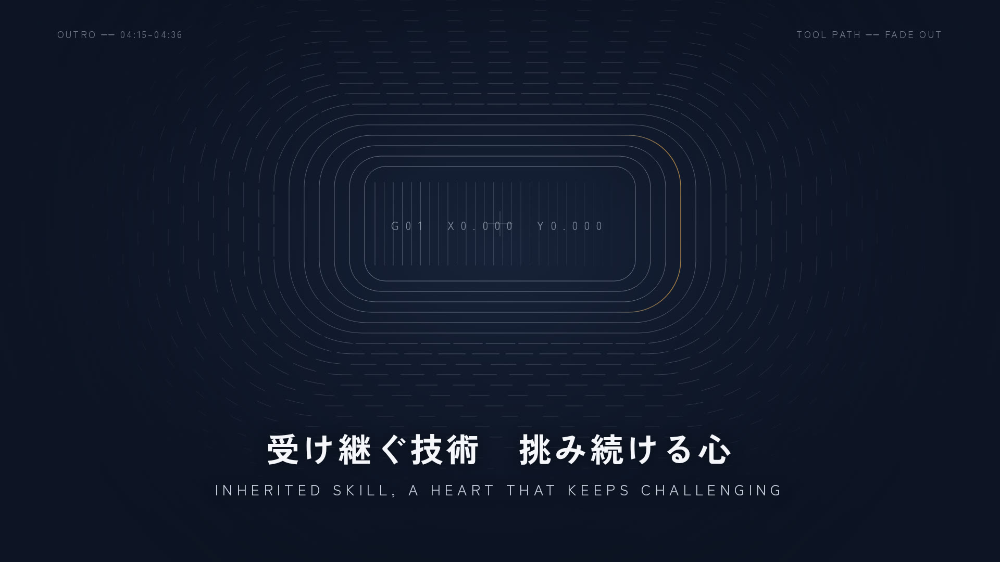
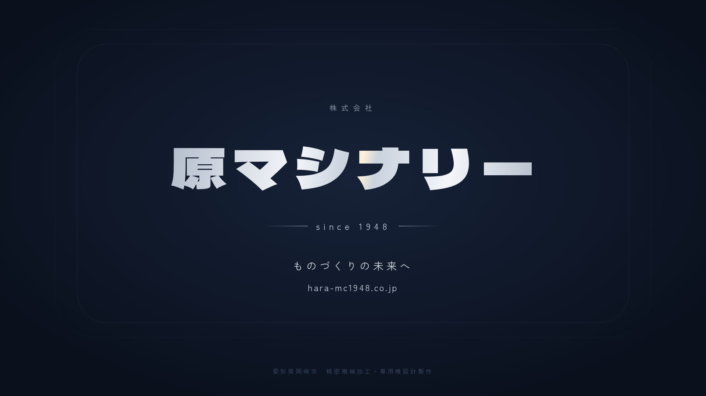
工具の軌跡の線が静かに消え、ロゴとスローガン「受け継ぐ技術 挑み続ける心」。最後にURLを表示してフェードアウト。
曲の最後の音でロゴが確定し、余韻でフェード
受け継ぐ技術
挑み続ける心
ものづくりの未来へ
原マシナリー
ロゴ、URL（hara-mc1948.co.jp）